全栈探索中 / 机器视觉与强化学习 / 喜欢贝斯 & 金属核
Full-stack Exploring / Machine Vision & Reinforcement Learning / Bass & metalcore fan
分支图标表示该仓库并非从零编写，而是在 fork 他人仓库的基础上进行了修改与完善。 The branch icon indicates this repository was not written from scratch, but forked from someone else's repo and then modified.
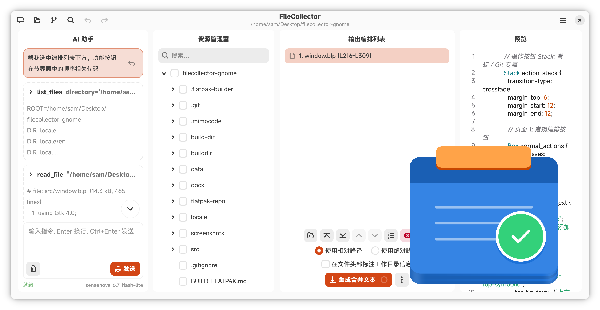
FileCollector 是一款跨平台的桌面小工具，用于高效收集、编排工作目录中的文件并生成合并文本。 它提供了可勾选的目录树、灵活的编排列表、文字插入和编码自动检测，非常适合将项目中的关键代码或文档快速整合成一个 TXT 文件，供后续分析或提交给大语言模型使用。配套有 CLI 与 MCP 服务，可实现自动化操作。
FileCollector is a cross-platform desktop utility designed for efficiently gathering and organizing files from working directories into a single merged text file. It features a checkable directory tree, a flexible organization list, text insertion capabilities, and automatic encoding detection—making it ideal for quickly consolidating important code snippets or documents from a project into one TXT file for further analysis or use with large language models. Additionally, FileCollector offers both a Command-Line Interface (CLI) and an MCP service to enable automated workflows.
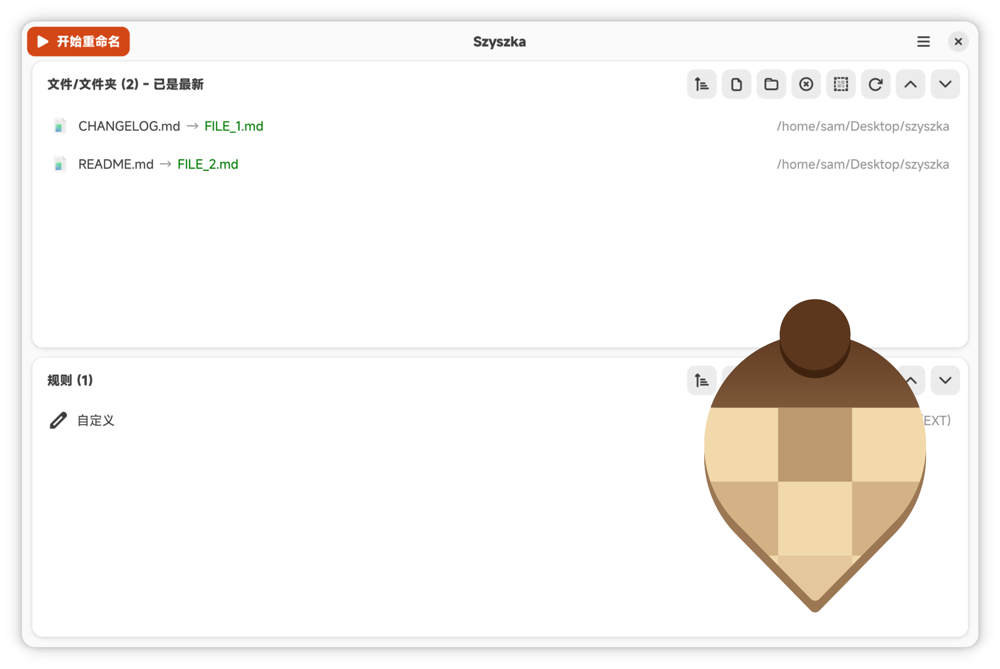
基于 GTK 4 和 Libadwaita 重写的批量文件重命名工具，支持正则表达式替换、文本修剪、编号、大小写转换等丰富规则，可跨平台运行于 Linux、macOS 和 Windows。
A bulk file renamer rewritten with GTK 4 and Libadwaita, featuring rich rules like regex replacement, text trimming, numbering, case conversion, and more. Cross-platform support for Linux, macOS, and Windows.
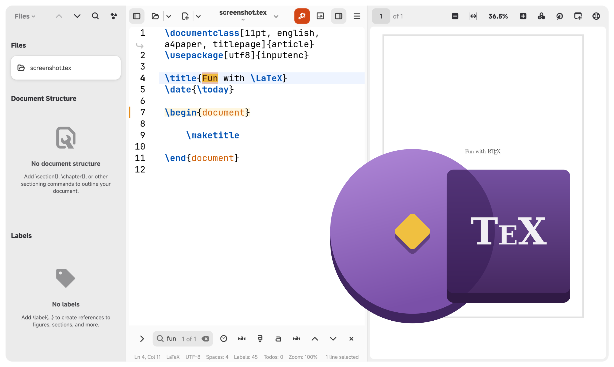
基于 Python 与 GTK 开发的 LaTeX 编辑器，支持 Linux 与 Windows 双平台。提供语法高亮、PDF 预览、符号侧边栏、自动补全等丰富功能，并可通过 meson 构建或直接运行开发版本。
A LaTeX editor written in Python with GTK, supporting both Linux and Windows. It features syntax highlighting, PDF preview, a symbol sidebar, autocompletion, and more. Can be built with meson or run directly in development mode.
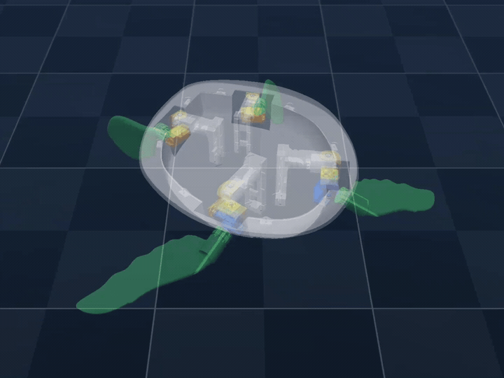
基于 MuJoCo 仿真环境与 Stable-Baselines3 框架的机器乌龟强化学习系统。尝试在不参考真实乌龟爬行方式的前提下，通过强化学习算法探索适合机器乌龟的爬行姿态。
A reinforcement learning system for robotic turtles based on the MuJoCo simulation environment and the Stable-Baselines3 framework. This system attempts to discover optimal crawling postures for robotic turtles through reinforcement learning algorithms, without relying on any reference data from real turtle movements.
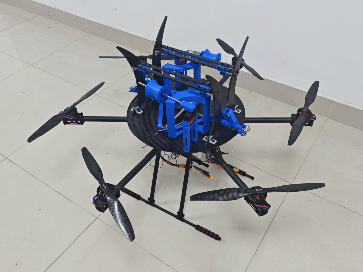
基于 Arduino 的遥控控制系统，实现多执行机构控制（推进电机、推杆、舵机），具备模块化设计、信号抗干扰优化及安全启动机制。
Arduino-based RC control system for multi-actuator control (propulsion motor, linear actuator, servos), featuring modular design, signal anti-interference optimization, and safe boot mechanism.
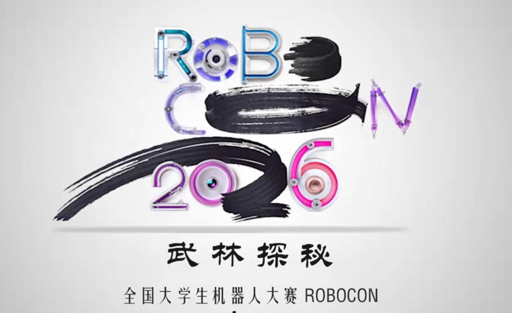
主导激光雷达模块的开发。基于 MID-360 及 Odin1 激光雷达硬件平台，采用 ROS2 系统架构，整合 FastLIO SLAM 算法实现 3D 点云地图构建，并通过 ICP 算法完成机器人实时重定位，为赛场机器人提供可靠的定位信息。
Spearheading LiDAR module development. Built upon the MID-360 and Odin1 LiDAR hardware platform with ROS2 architecture, integrated FastLIO SLAM algorithm for 3D point cloud mapping, and implemented real-time robot relocalization via ICP algorithm, providing localization support for arena robots.
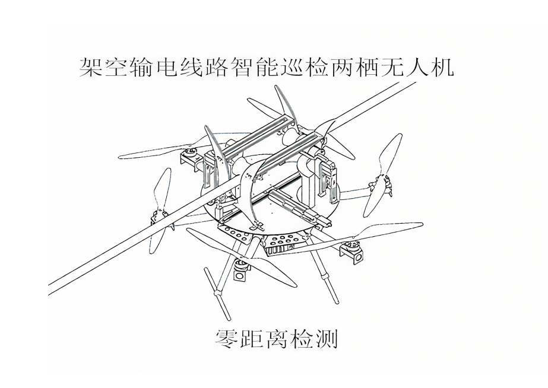
响应低空经济发展需求，设计无人机及爬缆装置。提出可飞行可悬挂的电力巡检无人机方案。使用 Arduino 单片机及独立遥控器构建控制系统，实现无人机上层主动悬挂机构的闭环控制。
In response to the development needs of the low-altitude economy, a drone and cable-climbing device were designed. A novel solution involving a flight-capable drone with suspended operation capabilities was proposed for power line inspection tasks. A control system based on an Arduino microcontroller and a dedicated remote controller was developed to achieve closed-loop control of the drone’s upper-layer active suspension mechanism.
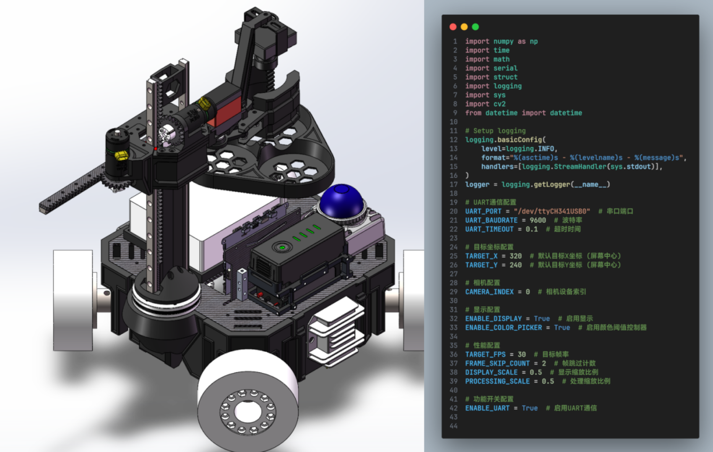
引入激光雷达进行 SLAM 建图，生成环境的 2D 点云地图用于全局路径规划。同时基于 OpenCV 负责目标识别与定位，并通过串口将识别结果实时上报至控制系统。
Integrated LiDAR for SLAM mapping, generating 2D point cloud maps of the environment for global path planning. Developed target recognition and localization using OpenCV, with results transmitted to the control system via serial communication.
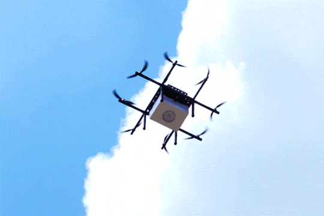
负责第二版无人机外形设计，优化八轴无人机的机架及舵机安装位置，将碳管排布设计为叠放式、舵机安装为上下交错型，减少机架所需碳管材料的加工次数、避免了旋翼之间的干涉并提升了整机强度。
Responsible for the second-generation drone design: optimized the frame structure and servo mounting layout of the octocopter. Designed carbon tubes to be stacked vertically and arranged servos in a staggered top-bottom configuration, thereby reducing the number of required carbon tube processing steps, preventing interference between propellers, and enhancing overall structural strength.
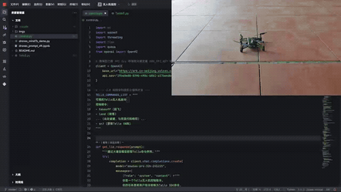
灵感来自启智社区 LLM 微调开源项目。通过调用 Tello 官方提供的 Python 控制 API，调用 LLM 将自然语言转换为格式化的控制指令并加以语法检查和超时防护等特性，实现利用自然语言控制 Tello 无人机的飞行行为。
Inspired by open-source projects on LLM fine-tuning within the OpenI AI Collaboration Platform, this project leverages the official Python control API provided by Tello. It employs an LLM to convert natural language inputs into structured control commands, while integrating syntax validation and timeout protection mechanisms, thus enabling intuitive natural language control over Tello drone flight behaviors.
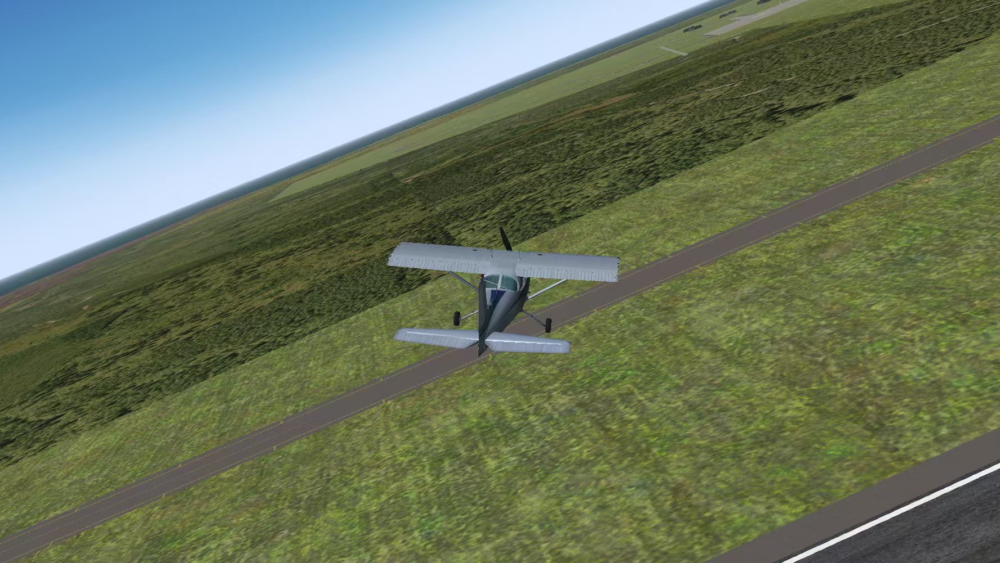
在 Matlab/Simulink 中建立六自由度刚体模型，用根轨迹法整定俯仰、迎角与横航向三通道控制增益，并设计三阶段着陆制导与蒙特卡洛敏感度分析；将 Simulink 模型移植为 C 代码，实现内外环级联 PID、四边航路制导与抗积分饱和，并借助 FlightGear 进行三维可视化；把 C 仿真进一步移植到 STM32，通过串口私有协议与 PC 端构成硬件在环（HIL）仿真系统。
A six-degree-of-freedom rigid-body model is built in Matlab/Simulink, where pitch, angle-of-attack and lateral-directional loop gains are tuned via root-locus design, together with three-phase landing guidance and Monte-Carlo sensitivity analysis. The Simulink model is then ported to C, realizing cascaded inner/outer-loop PIDs, a four-leg waypoint navigator and anti-windup saturation, with 3D visualization in FlightGear. The C simulation is further migrated onto an STM32, forming a hardware-in-the-loop (HIL) system that communicates with a PC host through a custom serial protocol.
你好！这里是 Sam-Fic。我喜欢绘画和音乐。重型贝斯（最喜欢的音乐人是 Virtual Riot） / 金属核（最喜欢的乐队是 Wind Walkers）音乐重度爱好者，喜欢虚拟歌手技术与文化（头像是嫣汐:D），喜欢学习语言。虽然我是工科出身，但我的梦想是做 UI/UX 设计师。
Hi! Sam-Fic here. I'm into drawing and music. A huge fan of Drum & Bass (favorite artist is Virtual Riot) and metalcore (favorite band is Wind Walkers), really passionate about Vocaloid technology and culture (my avatar is Yanxi :D), and love learning languages. Even though I studied engineering, my dream is to be a UI/UX designer.